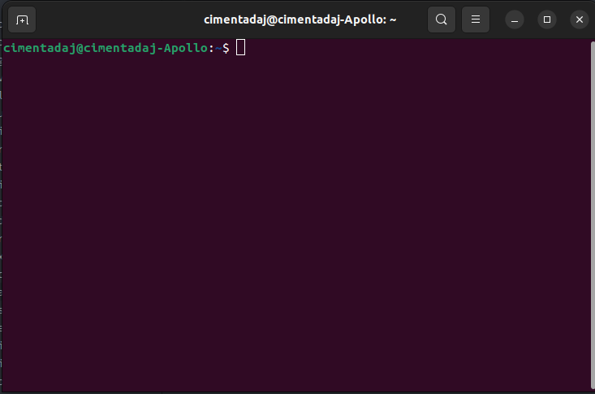
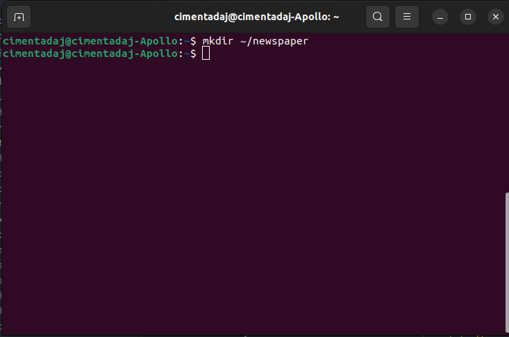
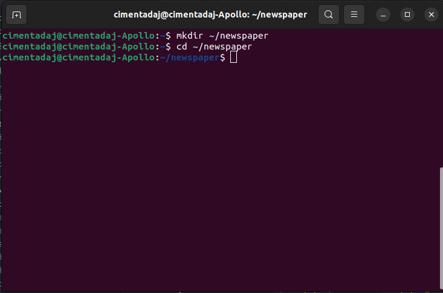
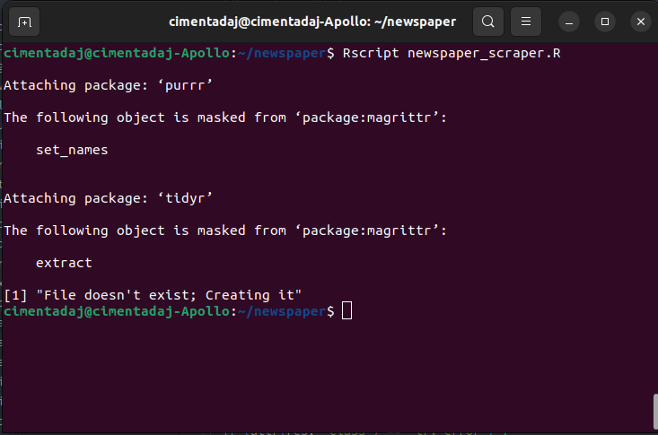
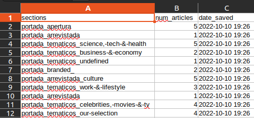
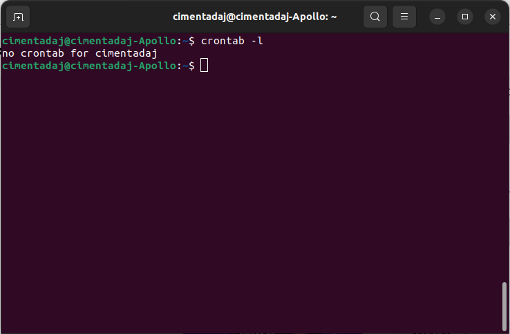
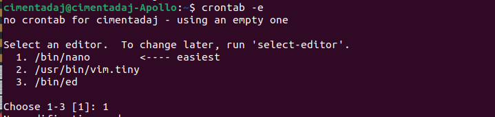
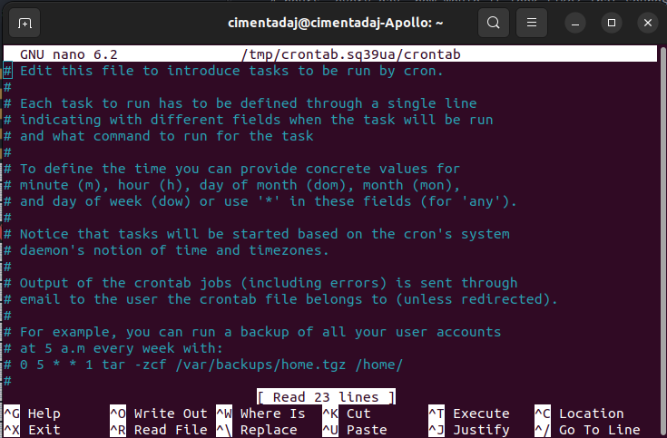
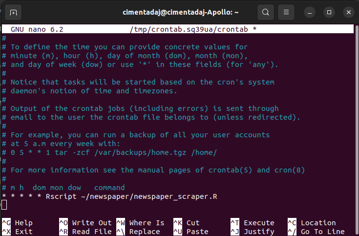
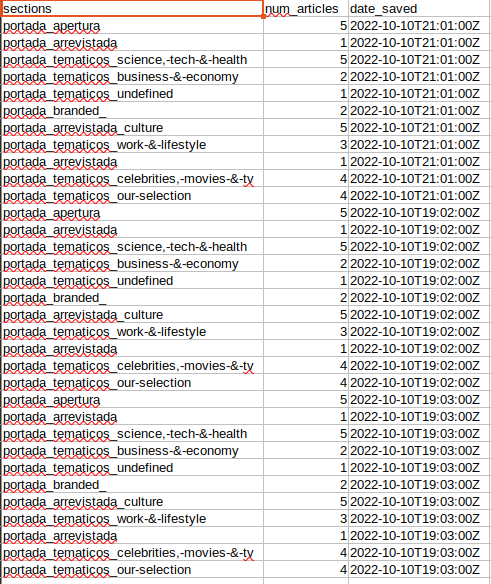

There are two types of webscraping: one-off scrapings or frequent scrapings. The first one is what we did in Chapter 2. You create a program to scrape something only once. This is a very common approach and we’ve done it a few times throughout this book. The second one involves building scrapers that you know will be used more frequently. Many examples come to mind: scrapers to extract news on a frequent basis, scrapers to extract temperature data on a daily basis, scrapers to collect prices of groceries in a supermarket website and so on. These scrapers are designed to be run on frequent intervals to get timely information.
For one-off scrapers, all of the material of the book until this chapter should be enough. However, for frequent scrapings we need new tools and strategies. Have you asked yourself how you can automate a script? By automating I mean, for example, run that script every Thursday at 08:00 PM. This chapter focuses on scheduling programs to run whenever you want them to. You might need this to collect data on a website that is changing constantly or to request data from an API on frequent intervals (the topic of APIs is the second part of this book) but in any of those two cases you don’t want to be manually running to your house at 3 in the morning to run the program. This chapter will make sure you don’t have to do that.
Scheduling scripts is very different between operating systems. This chapter will focus solely on scheduling scripts for Linux and MacOS. Windows users are recommended to search for ‘Windows Task Scheduler’ online to find out how they can schedule their R programs.
7.1 The Scraping Program
The first thing we need is a scraping program. Let’s recycle one from Chapter 5 which loaded an example from the newspaper “El País”. Our scraper will count the number of articles for each of the sections available in the newspaper “El País”. The R script will parse the “El País” website, extract the number of articles per section and collect everything in a data frame. Here’s how it would look like:
# Load all our librarieslibrary(scrapex)library(xml2)library(magrittr)library(purrr)library(tibble)library(tidyr)library(readr)# If this were being done on the real website of the newspaper, you'd want to# replace the line below with the real link of the website.newspaper_link <-elpais_newspaper_ex()newspaper <-read_html(newspaper_link)all_sections <- newspaper %>%# Find all <section> tags which have an <article> tag# below each <section> tag. Keep only the <article># tags which an attribute @data-dtm-region.xml_find_all("//section[.//article][@data-dtm-region]")final_df <- all_sections %>%# Count the number of articles for each sectionmap(~length(xml_find_all(.x, ".//article"))) %>%# Name all sectionsset_names(all_sections %>%xml_attr("data-dtm-region")) %>%# Convert to data frameenframe(name ="sections", value ="num_articles") %>%unnest(num_articles)final_df
There are 11 sections, each one with their respective number of articles. For a personal research project of yours, you’re interested in collecting these counts every day at three different times of the day. Your idea is to try to map how newspapers shift their writing efforts for different sections. Your hypothesis is that newspapers with certain ideologies might give more weight to certain sections while others give their weight to other sections.
The scraper above does precisely that but it’s missing a step: saving the data. The logic that we want to achieve is something like this:
If this is the first time the scraper is run, save a csv file with the count of sections
If the CSV with the count of sections exists, open the CSV file and append the newest data with the current time stamp
This approach will add rows with new counts every time the scraper is run. By plotting the time stamp and the count of sections you’ll be able to visualize how these counts change over time. To do that, we should add a new section in the code to save our results on a CSV file with the time stamp of the current date. Let’s add a section to save our data:
library(scrapex)library(xml2)library(magrittr)library(purrr)library(tibble)library(tidyr)library(readr)newspaper_link <-elpais_newspaper_ex()all_sections <- newspaper_link %>%read_html() %>%xml_find_all("//section[.//article][@data-dtm-region]")final_df <- all_sections %>%map(~length(xml_find_all(.x, ".//article"))) %>%set_names(all_sections %>%xml_attr("data-dtm-region")) %>%enframe(name ="sections", value ="num_articles") %>%unnest(num_articles)# Save the current date time as a columnfinal_df$date_saved <-format(Sys.time(), "%Y-%m-%d %H:%M")# Where the CSV will be saved. Note that this directory# doesn't exist yet.file_path <-"~/newspaper/newspaper_section_counter.csv"# *Try* reading the file. If the file doesn't exist, this will silently save an errorres <-try(read_csv(file_path, show_col_types =FALSE), silent =TRUE)# If the file doesn't existif (inherits(res, "try-error")) {# Save the data frame we scraped aboveprint("File doesn't exist; Creating it")write_csv(final_df, file_path)} else {# If the file was read successfully, append the# new rows and save the file againrbind(res, final_df) %>%write_csv(file_path)}
In summary, this script will read the website of “El País”, count the number of sections and save the results as a CSV file at ~/newspaper/newspaper_section_counter.csv. That directory still doesn’t exist, so we’ll create it first.
7.2 The Terminal
To use cron, and in general to execute R scripts, you’ll need to get familiar with the terminal. Let’s open the terminal. On Linux, you can do it by pressing the keys CTRL + ALT + t together. For MacOS click the Launchpad icon in the Dock, type Terminal in the search field and then click Terminal. For both operating systems you should see a window like this (not exactly but similar) one pop up:

This is the terminal. It allows you to do things like create directories and files just as you would do on your computer but through code. Let’s create the directory where we’ll save the CSV file and the R script that performs the scraping. To create the directory, we use the command mkdir which stands for makedirectory. Let’s create it with mkdir ~/newspaper/:

Great, the directory was created. Now you should copy the R script we wrote down above and save it in ~/newspaper/. Save it as newspaper_scraper.R. You should have only an R file within ~/newspaper/ called newspaper_scraper.R. You can confirm this by typing ls ~/newspaper/ which will list all files/directories inside ~/newspaper/. You should see an output like this one:
ls ~/newspaper/# newspaper_scraper.R
Your script was saved successfully inside our directory. Let’s switch our ‘directory’ to ~/newspaper/ in the terminal. In the terminal you can change directories with the cd command, which stands for changedirectory, followed by the path where you want to switch to. For our case, this would be cd ~/newspaper/:

As you can see in the third line of the image, there now appears ~/newspaper in blue, denoting that I am at the directory right now. To execute an R script from the terminal you can do it with the Rscript command followed by the file name. For our case it should be Rscript newspaper_scraper.R. Let’s run it:

The first few lines show the printing of package loading but we finally see the print statement we added when the file doesn’t exist: File doesn't exist; Creating it. If you opened the CSV on your computer you should see a sheet like this one:

Great, our scraper works! We have about half the job done. Now we need to come up with a way to execute this Rscript ~/newspaper/newspaper_scraper.R on a schedule.
7.3 cron, your scheduling friend
Luckily for you, such a program already exists. It’s called cron and it allows you to run your script on a schedule. For Ubuntu, you can install cron with:
sudo apt-get updatesudo apt-get install cron
For MacOS you can install it with:
brew install --cask cron
In both cases, after the install is successful, you should be able to confirm that it works with crontab -l:

The output means you have no scheduled scripts on your computer. To schedule a script with cron you need two things: the command to execute and the schedule. The command to execute we already know, it’s Rscript ~/newspaper/newspaper_scraper.R. For specifying schedules, cron has a particular syntax. How does it work? Let’s take a look:
* * * * * <command to execute>
# | | | | |
# | | | | day of the week (0–6) (Sunday to Saturday)
# | | | month (1–12)
# | | day of the month (1–31)
# | hour (0–23)
# minute (0–59)
At the bottom of the image we see 5 *. The text above it tells what each of these * stands for. In this order, they represent minutes, hours, day of month, month and day of week. * is in fact a placeholder to signal that whenever there is a * it means the command will be repeated at each instance of the placeholder. Complicated? Look at this example:
* * * * *
By writing * * * * *, we’re scheduling the program to run at every minute, of every hour, of every day of the month, for every month for every day of the week. Say we changed the schedule to run every 30 minutes for each hour of each day of each month for each day of week. That sounds awfully complicated to say. A simpler way is to say that the script will run every 30 minutes because all other date parameters are *, which means on every unit of each of the parameters. How would such a schedule look? We know the first slot is for minutes so we can write 30 in the first slot:
30 * * * *
We’re effectively scheduling something to run at minute 30 of each hour, each day, each month, each day of the week (if day of week, the last slot, clashes in a schedule with the third slot which is day of month then any day matching either the day of month, or the day of week, shall be matched).
Now that we know that each * represents a date parameter we can start to develop more interesting schedules. For example, Wednesdays are the third day of the week (if we start counting on Monday), so we can run a schedule every 30 minutes but only on Wednesdays:
30 * * * 3
Or you might want to run your scraper at 05:30 AM only on Saturday and Sunday:
30 5 * * 6,7
The expression reads like this: run on the 30th minute of the 5th hour every month but on Saturday and Sunday (6th and 7th day of the week). These simple rules can take you a long way when building your scraper.
Let’s say we wanted to run our newspaper scraper every 4 hours, every day, how would it look? That sounds a bit different to what we’ve done until now. The syntax we’ve discussed specifically writes down the day / hour / minute we want the scraper to run on. We have no way of saying, regardless of the day / hour / minute, run the scraper every X hours. For that cron has additional tricks. If we wanted to run a scraper every 4 hours we would write it like this:
1 */4 * * *
For the date parameter you want to make recurrent, add / by the frequency you want. If instead you wanted to run the scraper every 4 hours, every 2 days, you would write something like this:
1 */4 * * */2
So there it is. That’s the basics of cron. These simple rules will allow you to go very far in scheduling scripts for your scrapers or APIs. These details are enough to get our example running.
Let’s schedule our newspaper scraper to run every minute, just to make sure it works. This will get messy because it’ll append the same results in the CSV file continuously, filling the CSV with repeated data. However, it will give you proof that your script is running on a schedule. If we want this to run every minute, our cron expression should be this * * * * *, the simplest expression.
To save the cron expression type crontab -e in your terminal. If this is your first time using crontab you should see something like this:

This will allow you to pick the editor you want to use for editing your cron schedule. Pick whichever of the options points to nano, the easiest one. After choosing the editor (if it prompted you to pick the editor), it should continue to open a new file like this one:

This is the file where you write the schedule and command that you want cron to run. Either scroll down with your mouse or hit the scroll down key at the bottom right of your keyboard to go to the last line of the editor. In the last line, we need to write our cron schedule expression and the command we want to execute:
***** Rscript ~/newspaper/newspaper_scraper.R
When you finish writing that, your terminal should look something like this:

To exit the cron interface, follow these steps:
Hit CTRL and X (this is for exiting the cron interface)
It will prompt you to save the file. Press Y to save it.
Press enter to save the cron schedule file with the same name it has.
After you do this, you should be back at the terminal and your cron job should be saved. Nothing special should be happening at the moment. Wait two or three minutes and open the CSV file again. You should find the same records duplicated but with a different time stamp:

Our cron schedule worked as expected! You will see different time stamps in the date_saved column, reflecting that the scraper was run every minute. Before we close this chapter, remember to remove the schedule and Rscript command from cron. Enter crontab -e, go to the last line, delete the text and exit the cron interface with the instructions detailed above.
7.4 Conclusion
This framework of building a scraper, testing it and then scheduling it to run on frequent intervals is very powerful. With these commands you can automate any program (in fact, not only R but any programming language or program). However, this approach has limitations. Your computer needs to be turned on all the time in order for your cron schedule to run. If you’re doing a school project and it’s possible, you might get by with only using your computer. However, for more demanding scrapings (lots of data, frequent intervals) it’s almost always a better idea to run your scraper on a server.
Launching a server and running a scraper is out of the scope of this chapter but keep that in mind when building scrapers for your work. There are many tutorials to do that over the internet.
cron can also become complex if your schedule patterns are difficult. There’s a bunch of resources that can help you on the internet. Here are some that worked for me:
What is the cron expression to run every 15 minutes on Monday, Wednesday and Friday but only in February?
An R package called cronR allows you to setup cron schedules within R. Can you replicate what we did in this chapter using the cronR package? The package documentation can be found here.
Can you write down a script that empties the trash folder on your personal computer every Monday at 11AM? Write down both the scraper as well as the cron expression. Remember to remove this cron after deploying it to avoid unexpected files being deleted.